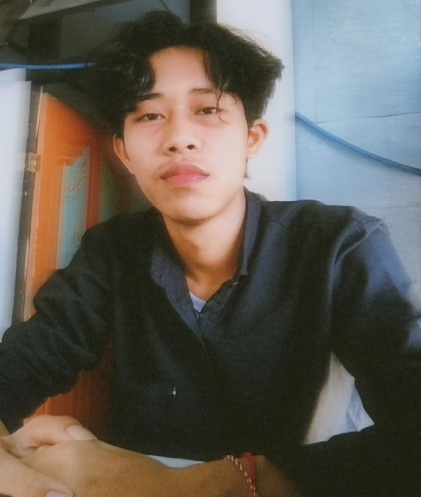

Pengenalan Diri
Hallo! Perkenakan Nama Saya I NENGAH SUTA WEDANA. Saya Berasal Dari Bali, tapi sekarang saya sedang menjalani Pendidikan saya di Kota Ambon..
Latar Belakang Pendidikan
Saya memulai perjalanan pendidikan saya dari SD, di mana saya belajar dasar-dasar ilmu dan keterampilan. Setelah itu, saya melanjutkan ke SMP dan SMA, di mana saya semakin mengembangkan minat dan bakat saya. Sekarang, saya tengah menjalani perkuliahan di kampus ITB - Stikom Ambon dengan jurusan Teknik Informatika. Meski perjalanan pendidikan saya belum lama, saya terus bersemangat untuk belajar dan mengeksplorasi berbagai hal baru di bidang ini.
Sedikit Cerita Yang Saya Alami
Jadi gini, jurusan yang saya ambil adalah Teknik Informatika, tapi entah kenapa saya malah jatuh cinta dengan desain grafis dan fotografi! Alih-alih pusing dengan coding dan server, saya lebih sering sibuk bikin logo keren dan memotret momen-momen lucu. Kadang saya mikir, mungkin ada bug di sistem saya yang bikin saya lebih suka ngedit foto daripada ngoding. Tapi, meskipun rada melenceng dari jurusan, saya enjoy banget eksplorasi kreativitas di sini. Oh, dan kebetulan, website ini adalah salah satu hasil karya saya yang dibuat dengan coding—jadi saya tetap bisa unjuk gigi sedikit di dunia teknologi!.
Kutipan Inspiratif
"Jangan takut buat ngejalanin hobi meski jurusan kamu berbeda dari hobi yang kamu tekuni. Kadang-kadang, malah jadi seru kalau kamu bisa mengejar hobi sambil nunggu tugas kuliah selesai! Jadi, kalau passion kamu berbelok dari rencana awal, anggap aja sebagai bonus seru dalam perjalanan hidupmu. Dan siapa tahu, kreativitasmu yang nyeleneh justru jadi kelebihan yang bikin kamu beda!" - SutaWedana
Hobi dan Minat
Di luar kesibukan saya sebagai mahasiswa, saya punya beberapa hobi yang bikin hari-hari saya lebih seru. Saya senang banget berfotografi dan menangkap berbagai momen keren. Musik juga jadi teman setia saya, bikin suasana hati jadi lebih baik. Selain itu, saya suka main-main dengan desain dan bikin logo simpel, sekadar untuk bersenang-senang dan menyalurkan kreativitas.
Keahlian
-
Desain Grafis
-
Fotografi
-
Bahasa Pemrograman